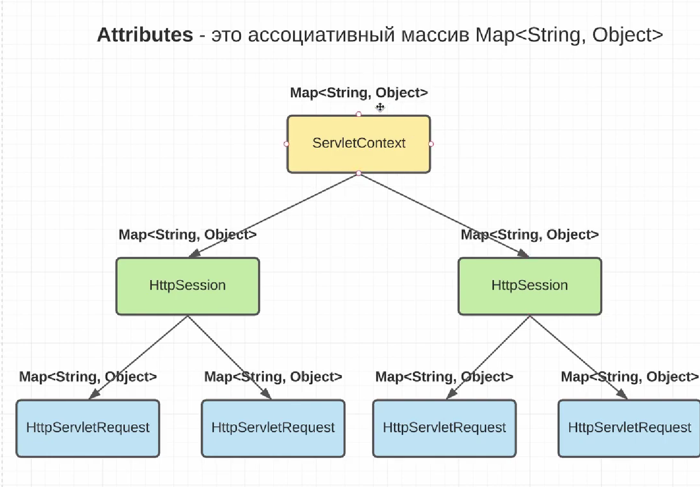

Сессии в основном используются для того, чтобы хранить там какие-то значения, который ассоциируются с множеством
request'ов. Для того чтобы хранить значения в сессиях мы должны использовать такие методы как
.setAttribute(String s, Object o), где ключом для атрибута является строка, а значением любой
объект. Т.е. так как сессия хранится на стороне сервера, то, следовательно, это обычный Java объект, в котором
есть другой ассоциативный массив. Это и являются аттрибуты. Поэтому, мы можем хранить там целого юзера. И каждый
раз, когда приходит запрос, мы можем понять, к какому юзеру в базе данных относится та или иная сессия.
Создадим в dto класс UserDto.java и продолжим работу в SessionServlet.java.
Мощь атрибутов не только в том, что он есть у сессий, он есть и у request'ов, и даже у сервлет контекста. Поэтому можем использовать его в трёх местах. Т.е.
ServletContext он один единственный на всё приложение, это как глобальный объект, к которому
можем достучаться и у него тоже есть такие же методы как у сессий для работы с атрибутами. По-другому, у него
есть тоже ассоциативный массив.
ServletContext атрибуты не так часто используются, но если установим, то они будут доступны для
всех сессий и запросов, потому что он один единственный глобальный объект. Его можно использовать как хранилище
констант для всего приложения.
HttpSession тоже есть атрибуты, поэтому у каждого объекта HttpSession есть
ассоциативный массив этих атрибутов.
HttpServletRequest'ов свои ассоциативные массивы этих атрибутов. Логично
предположить, что у каждого этого объекта свое поле, следовательно, свои атрибуты.
HttpServletRequest не совсем понятно зачем хранить атрибуты, если у request живёт
только один запрос. Но на самом деле нужно использовать атрибуты. Например, для перенаправления запросов на
другие сервлеты.